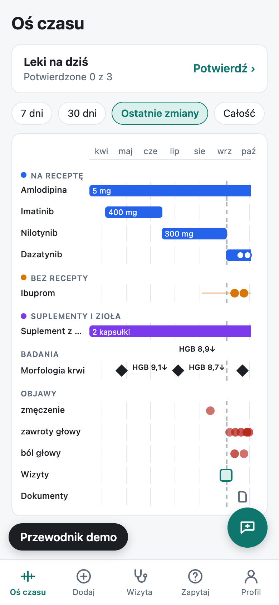
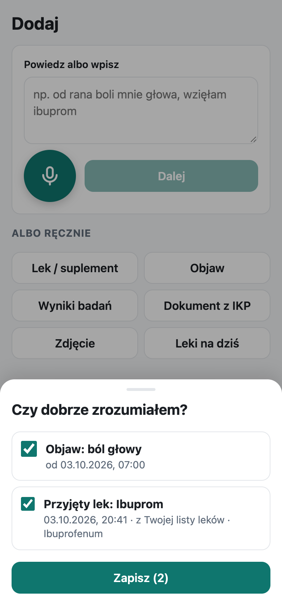
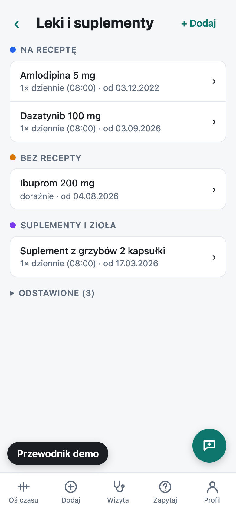
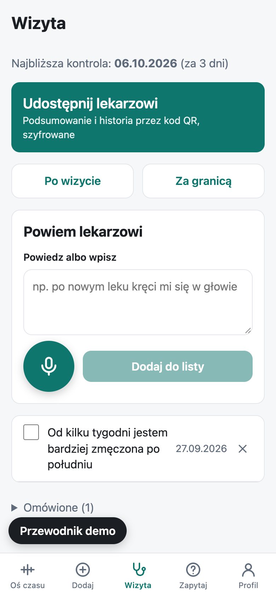
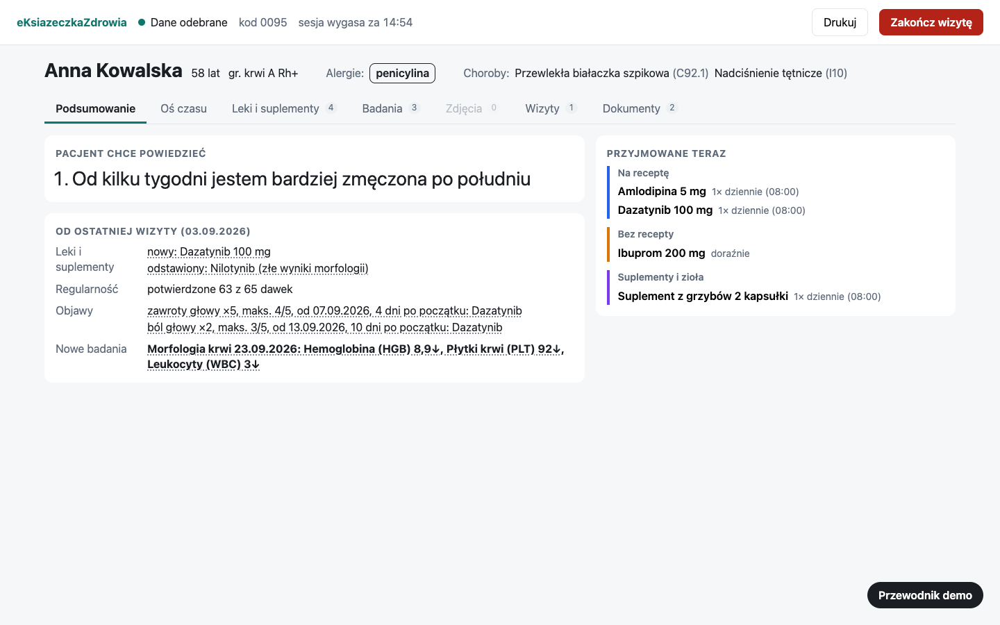
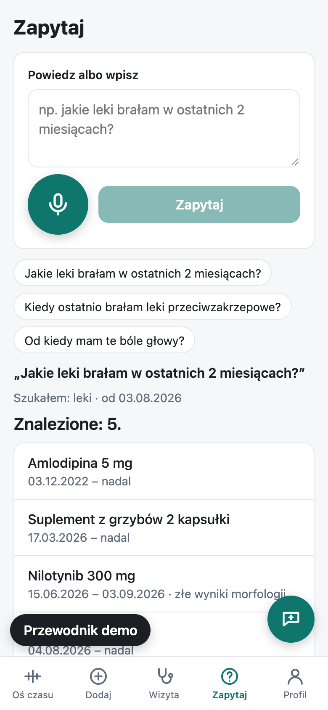
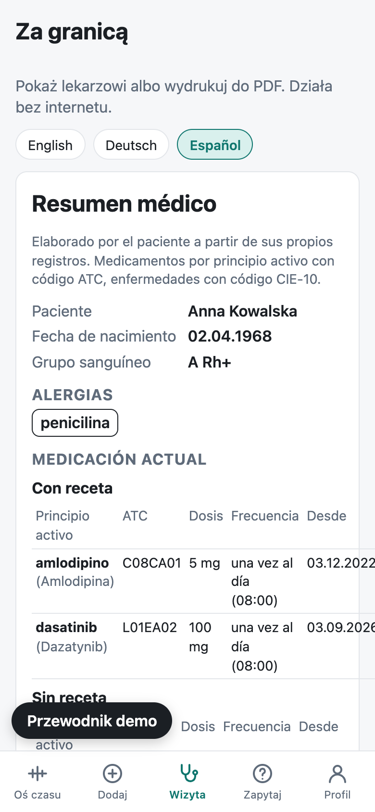

Prywatna oś czasu zdrowia na telefonie pacjenta, uzupełniana głosem, którą w kilka sekund można bezpiecznie pokazać dowolnemu lekarzowi – także za granicą.
Zespół Drop the Base
[członkowie zespołu]

→ Zapisujemy wszystko, co pacjent bierze – także suplementy i zioła – i pokazujemy to lekarzowi na równi z lekami z recepty.
eKsiazeczkaZdrowia2Przychodnie, szpitale, laboratoria, aplikacje, papier. IKP zna recepty, ale nie wie, co pacjent faktycznie bierze, kupuje bez recepty i jak się czuje.
Dawki, daty badań, objawy, zalecenia z wizyty – w 10-minutowej wizycie wszystko ucieka.
Trudno zobaczyć, że objaw zaczął się kilka dni po nowym leku albo że jedyną stałą jest suplement.
Lekarz nie ma dostępu do historii, a pacjent nie umie jej opisać w obcym języku.




Lekarz otwiera stronę w przeglądarce, pacjentka skanuje QR → dane płyną zaszyfrowane end-to-end. „Pacjent chce powiedzieć”, wszystko, co przyjmuje (na równi) i podsumowanie od ostatniej wizyty na start, dalej oś czasu w zakładkach. Dane tylko w pamięci karty – znikają po „Zakończ wizytę”.


| mojeIKP | Bearable / CareClinic | eKsiazeczkaZdrowia | |
|---|---|---|---|
| Faktycznie przyjmowane, OTC, suplementy | ✗ | ✓ | ✓ |
| Jedna oś: leki + objawy + badania + wizyty | ✗ | częściowo | ✓ |
| Głos: wpisy i pytania o przeszłość | ✗ | ✗ | ✓ |
| Widok dla lekarza przez QR, bez konta | ✗ | ✓ | |
| Dane tylko na telefonie, przesył E2E | ✗ | chmura | ✓ |
| Podsumowanie offline w języku lekarza | częściowo | ✗ | ✓ |